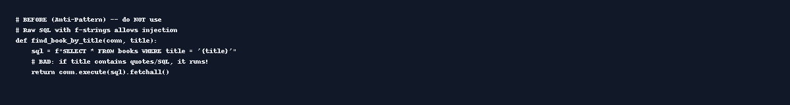

LibraryFlow
Algorithms re-used. Domain changed.
Register/Login → Books (inventory) → Loan Transactions (borrow/return). Secure by default.
Executive Summary
Same patterns as bank app (users, balances → copies, transactions → loans)
Flask + SQLAlchemy + Jinja2
Secure defaults; vulnerabilities described as non-executable demos
Testing Methodology
Functional paths, input validation
Manual security checks (auto-escaping, ORM)
Simulated scan logs
SQL Injection: Before/After

XSS: Before/After